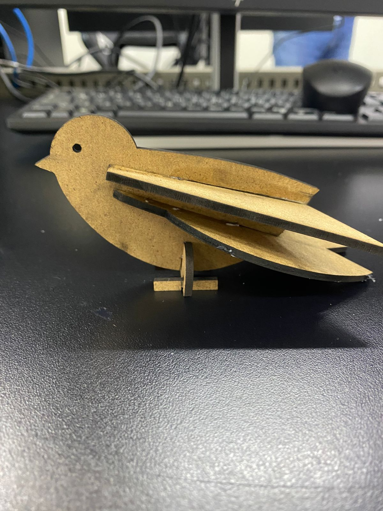

Bitacora
Syllabus
Aquí les dejo el Syllabus del proyecto. Básicamente es el plan de todo lo que vamos a estar viendo en el semestre y cómo vamos a trabajar.

[Syllabus]
Tarea 1
Esta fue mi primera tarea. La verdad sirvió mucho para irle agarrando la onda al programa y entender dónde están las herramientas básicas de modelado.

[Enlace directo]
Ejercicio 3
Para este ejercicio practicamos un poco más con las dimensiones y las formas. La idea era seguir soltando la mano con el software.

[Enlace directo]
Ejercicio 5
Aquí la cosa se puso un poco más interesante. Tuve que combinar varias operaciones para lograr la geometría que nos pidieron.

[Enlace directo]
Florero
Me aventé este diseño de florero. Quería probar hacer algo con curvas más suaves para que se viera estético.

[Enlace directo]
Dibujos Solid
Este es el paquete con los 40 diseños que hicimos. Hay de todo un poco para practicar diferentes herramientas de modelado.
📥 Descargar 40 Diseños (SLDT.zip)
Pieza 1
Pieza 2
Pieza 3
Pieza 4
Pieza 5
Pieza 6
Pieza 7
Pieza 8
Pieza 9
Pieza 10
Pieza 11
Pieza 12
Pieza 13
Pieza 14
Pieza 15
Pieza 16
Pieza 17
Pieza 18
Pieza 19
Pieza 20
Pieza 21
Pieza 22
Pieza 23
Pieza 24
Pieza 25
Pieza 26
Pieza 27
Pieza 28
Pieza 29
Pieza 30
Pieza 31
Pieza 32
Piezas Separadas
Pieza 34 (Vista 1)
Pieza 34 (Vista 2)
Pieza 34 (Vista 3)
Pieza 37
Maceta 1

Maceta 2

Maceta 3
Ida al IDIT
Nos dimos una vuelta por el IDIT para checar las máquinas y ver dónde vamos a estar trabajando.


Portacelulares
Un diseño rápido para sostener el cel, se ve bastante práctico.

Introducción al corte láser
Aquí nos explicaron cómo funciona la cortadora láser, qué materiales se pueden usar y qué no.


Ensamble de corte láser
Armamos este pájaro cortado en láser. Estuvo cool ver cómo embonan las piezas.

[Ensamble de corte laser]
[Ensamble de corte laser DXF]
Grabado de logo con laser

Impresión 3D

Impresión 3D con IA
Experimentamos usando IA para generar este modelo de perro salchicha y luego imprimirlo.

Introduccion al corte de lamina
Empezamos a ver cómo trabajar con metal y lámina, que es un proceso diferente al láser en madera.


Escaneo de rostro
Usamos el escáner 3D para capturar un rostro y digitalizarlo. ¡Se ve súper detallado!


Caja de lamina
Aquí está el proceso de cómo armamos una caja usando lámina doblada. Les dejo las fotos de cómo fue quedando.


Matriz
Cartel CNC Router
Figurin

Catapulta
Este fue un proyecto más grande: armar una catapulta completa con todas sus partes mecánicas.


Archivos del ensamble:
[Catapulta Ensamble]
[Armcatapulta]
[Basecatapulta]
[Plungercatapulta]